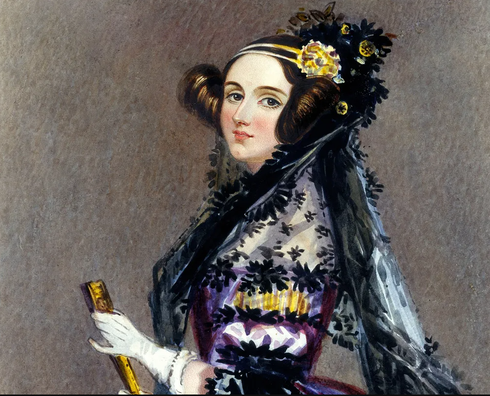
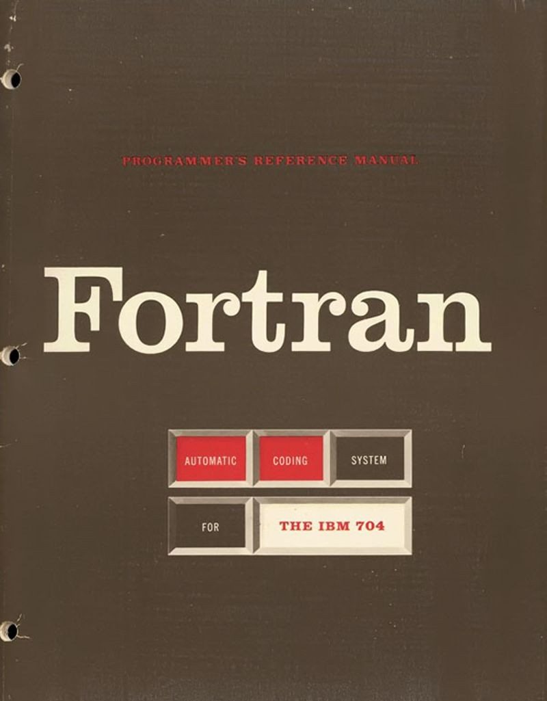
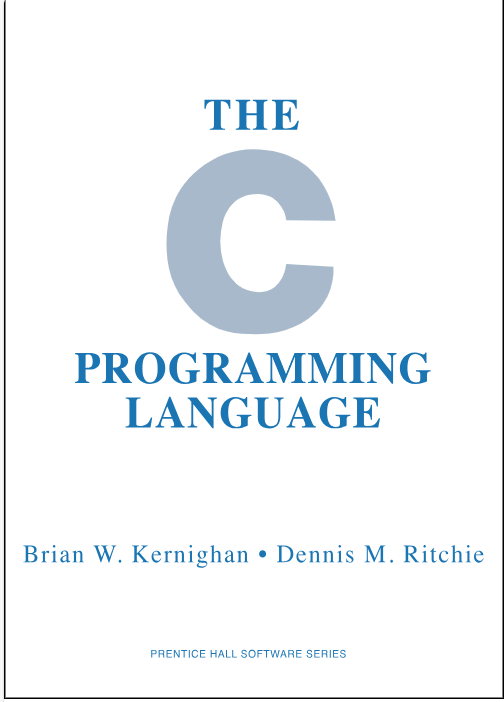
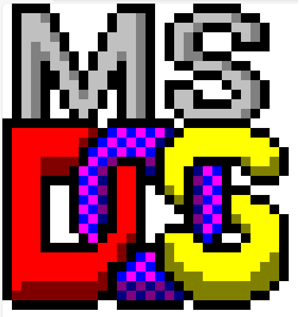

Antes do Software
Antes mesmo dos computadores eletrônicos, existiam conceitos matemáticos que podem ser considerados precursores do software, como o algoritmo de Ada Lovelace (1843) para a Máquina Analítica de Charles Babbage. A ideia de programação surgiu nesse contexto, com Ada Lovelace sendo reconhecida como a primeira programadora da história.
Nascimento do Software Moderno

Os primeiros computadores eletrônicos, como o ENIAC (1945), eram programados manualmente, reconfigurando cabos e interruptores. Em 1949 surge o conceito de programa armazenado, proposto por John von Neumann, permitindo que instruções fossem guardadas na memória do computador.
Primeiras Linguagens de Programação
Com o avanço da tecnologia, surgiram as primeiras linguagens de programação, como o Assembly (uma linguagem de baixo nível) e o Fortran (desenvolvido pela IBM para cálculos científicos).
Surgimento de Sistemas Operacionais e Linguagens Avançadas
Empresas como IBM dominavam o mercado com mainframes. O software começou a se tornar um produto separado do hardware. Surge o Unix (1969), o C (1972) e bancos de dados relacionais (SQL), fundamentais para sistemas operacionais modernos.
A Revolução do PC e Software Pessoal
Nos anos 80, os PCs começaram a se popularizar nas casas e nos escritórios. A Microsoft lança o MS-DOS (1981) e depois o Windows (1985). A Apple lança o Macintosh (1984), com interface gráfica inovadora
A Internet e a Revolução dos Softwares

Com a explosão da Internet nos anos 1990, softwares como navegadores (como o Netscape, lançado em 1994) e o Windows 95 revolucionaram o uso doméstico dos computadores. Foi também a época do boom do software de código aberto. Linus Torvalds lançou o Linux em 1991, marcando um passo importante nesse movimento. O conceito de "software gratuito" começou a ganhar destaque, impulsionando o desenvolvimento colaborativo e a democratização da tecnologia.
Software na Nuvem e O Código Aberto
Nos anos 2000, com a popularização da banda larga e a expansão da Internet, o software começou a migrar para a nuvem, permitindo acesso online sem instalação local. Surgiram serviços como Google Docs, Dropbox e Amazon Web Services, enquanto linguagens como JavaScript e frameworks como Ruby on Rails facilitaram o desenvolvimento web. Empresas como Google, Amazon e Facebook se consolidaram, e o modelo SaaS (Software como Serviço), iniciado por pioneiros como a Salesforce, ganhou força com plataformas como Spotify e Netflix. Em 2007, o lançamento do iPhone pela Apple revolucionou o mercado de apps móveis.
A Era Moderna
A partir dos anos 2010, o modelo de Software como Serviço (SaaS) se consolidou, com ferramentas como Slack, Zoom, GitHub e Spotify tornando-se essenciais no cotidiano e nos negócios. Paralelamente, a inteligência artificial, o aprendizado de máquina e a automação passaram a ser integrados de forma mais profunda ao software, com tecnologias como TensorFlow, PyTorch e ChatGPT impulsionando inovações. O desenvolvimento também foi transformado pelo movimento open source e por práticas como DevOps, com plataformas como GitHub e ferramentas como Docker. Na infraestrutura, a computação em nuvem se tornou dominante, com serviços como AWS, Azure e Google Cloud liderando o mercado.